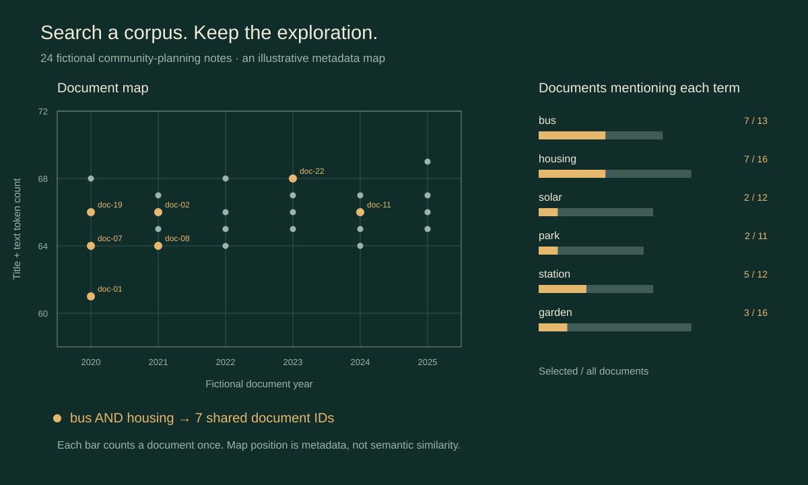

Research / Information Visualisation 2012
InfoMapsA Session Based Document Visualization and Analysis Tool
2012 16th International Conference on Information Visualisation · pp. 274–282 · IEEE
Original abstract
Published in 2012. This is the original abstract, also preserved in the official conference abstract book.
InfoMaps is an information visualization tool designed for personal information management and for supporting data analysis. In this paper we briefly discuss the design of InfoMaps and explain its role in finding relevant information. InfoMaps is tightly coupled with Weave, an open source framework, providing a set of data analysis and visualization tools. Weave's framework is built with session states as its core and this provides InfoMaps the ability to store the entire user's interactions as well as visualization layouts. We discuss the implications of using the Weave framework with InfoMaps and its relevance to the field of information retrieval and visual analytics.
Explore documents, retain the path
Keep the documents, selections and exploration history connected.
The original abstract describes InfoMaps as a document-visualization tool for personal information management and data analysis, coupled with Weave. Its session state preserved user interactions and visualization layouts.
This new companion uses 24 fictional community-planning notes. Search results connect a document map, keyword bars and a reader. The map’s horizontal axis is the invented year; its vertical axis is title-plus-text token count. Positions show metadata and carry no semantic-similarity meaning.

Explore the document desk
Search a small corpus, follow the same document IDs across views, and revisit the exploration.
24 fictional planning notes
Authored teaching fixtureTry bus, solar or housing. Combine words to require all of them, inspect matching documents, and select a point, keyword or row. Native VizFootprint sessions retain the path for time travel, branches, comparison and saved-session replay.
Runs locally in your browser with no external retrieval, account connection or paid model call.
Data, search & scope
The notes were newly authored for this companion. Mobility, Housing, Green space and Energy each contain six documents, with invented years from 2020 to 2025. These are not records of actual plans or results. The map uses exact year and token-count values, with no semantic projection.
Search uses lowercase ASCII alphabetic tokens of at least two letters, combines unique query terms with AND, and matches whole tokens in each title and text. It keeps stopwords and uses no stemming: park and parks are different queries. Keyword bars display selected/all document frequency, counting each document at most once.
This is an illustrative companion to the verified theme of session-based document exploration. The fictional corpus, metadata map, search/count rules and native branches are disclosed implementation choices. It does not reconstruct the original 2012 retrieval pipeline, layout, ranking algorithm or evaluation.
The original abstract and publisher record are linked above. The companion and figure were newly produced for this page.
Cite the paper
Cite the 2012 conference paper for its research contribution. Identify the authored corpus and pinned software versions when describing this companion.
@inproceedings{kolman2012infomaps,
author = {Kolman, Sebastin and Dufilie, Andrew S. and Anbalagan, Sanjay Krishna and Grinstein, Georges},
title = {{InfoMaps}: A Session Based Document Visualization and Analysis Tool},
booktitle = {2012 16th International Conference on Information Visualisation},
year = {2012},
pages = {274--282},
publisher = {IEEE},
doi = {10.1109/IV.2012.54},
url = {https://doi.org/10.1109/IV.2012.54}
}